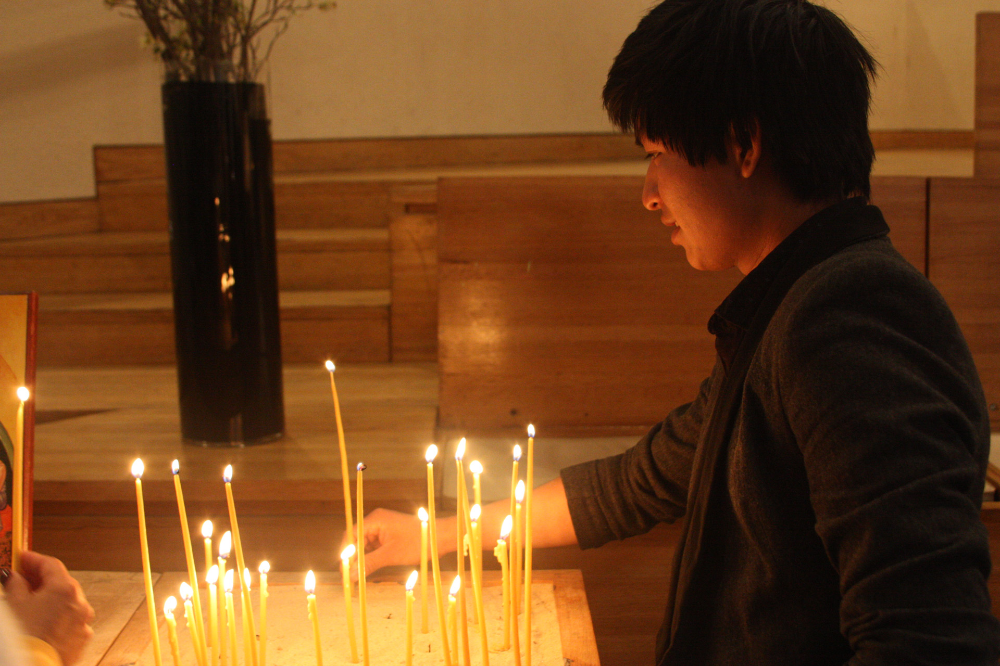

This Priest "Adopted"
27 Young People So
They Don't Get Deported
Fabián Arias has become the legal guardian for dozens of undocumented immigrants in New York City.
Hermes Espinoza was 17 and alone in New York, without a family and undocumented. He had crossed the border a year earlier, in 2006, to escape the LGBTQ discrimination he faced at home in the state of Guerrero, Mexico.
In the midst of his loneliness, he even attempted suicide. “I missed my family a lot… There was this moment where I didn’t want to live anymore. I felt completely alone and empty,” Espinoza, now 25 years old, says.
But things started to change when a friend told him about a priest from a midtown Manhattan church famously known for serving Latino parishioners and the LGBTQ community. It was the Church of Sión, a Lutheran congregation of Saint Peter’s Church led by the Argentinian pastor Fabián Arias.
Espinoza began to visit the church frequently and became part of its community. In 2007, he decided to take it a step further: He asked Arias to claim legal guardianship over him as a way to obtain permanent residency. This would become a life-changing moment for the priest and this Christian community. Ten years later, Arias is the guardian of 26 other people who arrived to the United States as unaccompanied minors. Various church members have followed a similar path.
The Church of Sión is part of the New Sanctuary Movement, a renewed version of the concept created by John Fife in Arizona in the 1980’s. In New York alone, there are 12 such groups providing refuge to immigrants.
Arias, 53, had no children before he started “adopting” immigrants at risk of deportation. “I hope we can help all 11 million... as many as we can,” Arias says, somewhat facetiously, while he talks to two young men who have become part of the community.
Father Fabián’s List
Espinoza's request prompted the Argentinian-born Arias to enter a new chapter in his professional life.
Arias obtained U.S. citizenship in 2002, after leaving his country and the Catholic Church in which he grew up, attracted to the Lutheran Church’s “more open approach to a modern lifestyle.” He arrived in New York during the George W. Bush era; in nearby New Jersey, there were ICE raids in the factories where undocumented immigrants worked. Now, the Lutheran congregation for Latinos at Saint Peter’s Church, where he was a leader, welcomes a community of 300 immigrants, 80 percent of whom are undocumented, according to Arias.
“What we live now can’t be compared with what occurred at that time,” Arias says, referring to the raids of the 1990s. The hunt for undocumented immigrants became evident when deportations increased by 39.1 percent between 1996 and 1997, according to data in the Department of Homeland Security's historical archive.
During this time, the Illegal Immigration Reform and Immigration Responsibility Act facilitated massive deportations. This created the legal framework for immigration agencies like ICE to deport any immigrant who had exceeded their time in the United States and had no legal documentation.

The vulnerability of undocumented immigrants is not new, although Donald Trump's anti-immigrant speeches appear prominently on Twitter and other media. “This is an aggressive political model. It is an antihuman model that does not respect civil rights,” says Father Fabián.
Back in 2008, when he took guardianship of Hermes Espinoza, the priest saw the opportunity to take the next step in his activism work.
Stories about the guardianship spread by word of mouth. Soon, immigrants came one by one, sometimes two by two. After Hermes, it was Darwin. Then came Gloria, Brian, Blanca, Juan Carlos, Octavio, Lucas, Michael, Allan, Yovanis, Yovanis's brother, Julian, Diego... and the list goes on.
The new administration’s approach to immigration has increased the volume of petitioners, Arias says. He currently has seven pending petitions with young people from Colombia, Peru, and Guatemala. Given the number of seekers, the church developed a strategy for considering requests, prioritizing immigrants younger than 21 who are facing deportation orders.
How legal guardianship works
Legal guardianship allows Arias to represent the young people in question. Unlike adoptions, this doesn’t eliminate the paternity rights of the biological parents.
Typically, the procedure takes between three and six months. Lawyers request signatures from the biological parents (if they are alive), and the court evaluates the civil records and criminal records of the prospective guardian, as well as the home where the person will live, and, in some cases, the people with whom he or she would share the home. Finally, approval is issued by a family court judge. Afterwards, the beneficiary can apply for a work permit, then, three years later, a permanent residency.
The young people Arias “sponsors” meet the requirements of the Special Status of Juvenile Immigrants, granted only to undocumented minors who have been abused, abandoned, or neglected. In these cases, the guardianship process is supported by nonprofit organizations such as The Door, Cáritas, and Legal Aid Society. Lawyers from these organizations offer their services for free. Since these cases are so unique, not many lawyers work on them, says Norma Potros, an independent immigration law expert. “Not many are interested or even know about this special status,” she explains.
When young people arrive at Church of Sión, the priest evaluates their case with immigration law specialists to see if there are any other legal paths (such as DACA) to regulate their immigration status. Each “adopted” minor rents a room, sends support to their families back home, and is totally independent. They often meet on Sundays at the church. “[The applicants] have to have a presence here [in the church], they have to come to the activities and be very responsible with their studies, because that is a fundamental part of their future,” Arias says.
Over time, the priest has become burdened by the number of people in his care. In 2015, Arias asked Olga Torres, a 59-year-old parishioner, to take legal guardianship of Octavio and Lucas Godínez. (The youngest, Lucas, had been arrested for entering the subway without paying, and had a deportation order. According to them, he would have been sent back to Mexico if he had not been “adopted.”) Torres accepted.
“If you listen to their stories, you can’t restrain yourself from doing it,” Torres says. She’s one of three parishioners who have become legal guardians. “And it’s nothing complicated. [The immigrants] come from some families who beat or mistreated them. And all they want is to have their documents to stop being persecuted.”
So far, all petitions have been successful. Nine people have already received their permanent residency, while another 15 are in the process of applying for it. But, for Arias, the meaning goes even beyond the legal effects. ”The meaning of guardian has to do, for me, with giving guidance, [reminding them] that they are not alone, [so] they feel they have a house,” he says.

Diego, the most recent addition
The case of Diego Ztuc, 20, the most recent “adoptee,” has been one of the most complicated ones. At first, the application was denied, because the investigator mistakenly believed that Diego had reached Arias through the recommendation of a lawyer. They appealed and won the case two months later, in spring 2017.
Ztuc arrived to the United States in 2012 from Mazate, Guatemala. “I left my house because no one cares about me there,” he says. He crossed the border alone when he was 15 years old. There, in the Nogales area, the Mexican border police stopped him. When they saw that he had no one else to help him, Ztuc says, they let him go.
He has lived the last four years between Miami and New York, where he met Arias. During the legal process, he spent time at the priest’s house in the Bronx. Now, Arias is helping him find a school so he can improve his English.
Arias knows that his name appears frequently in judicial records and that the judges of the Family Court recognize him. He doesn’t forget the pedophilia scandals in which the Catholic Church has been involved. He’s also aware that ICE knows what the church is up to. Then, there are those who question where the money comes from to protect these young people.
The law doesn’t establish a limit on guardianship, as long as the person demonstrates that he or she has done right by the young adults who are already under their care. Guardianship, Arias says, “is difficult, it’s uncomfortable, but, this is something that all those who feel socially responsible could and should do.”
Several of his “adopted” children have reached adulthood, and are no longer dependent on him. Some even have their own children, and those kids recognize Fabián as a “grandfather.”
The "adoptions" in the eyes of ICE
ICE Public Affairs Officers for New York didn’t answer phone calls or email requests for comment. But a deportation officer at the NYC agency, who asked not to be identified, notes that law enforcement agencies are aware that this strategy takes place in California churches, too.
“We want these young people to be Americans,” the officer says. “We want them to grow in our society, to prosper, and be happy. Because when you support a young child from another country to have an American life, you’re giving him or her an opportunity.”
According to the officer, churches are spaces of faith from which ICE prefers to keep some distance, as long as they remain within the legal framework and don’t have “outstanding debts” with the authorities. “As long as they keep these kids out of gangs and from being criminals, that’s fine,” the officer adds.
Not all of the churches of the New Sanctuary Movement know about the “adoptive” work, or practice it. Even so, some express support for the initiative. Father Luis Barrios, from the church of Santa Cruz, a Hispanic congregation of the Holyrood Episcopal Church in Northern Manhattan, believes that the practice is extreme, but required.

“We [the Church of Santa Cruz] only give guidance to those who want to take responsibility for some nephew or relative who needs a guardian. We think it’s too much, but the truth is that [the immigrants] have no other way,” Barrios says.
More than 90 blocks south, Arias takes a sip of mate and reflects on the family he has created. The resistance tactic has its human, social, and economic costs—some which make it unsustainable, as Arias himself admits.
“All the judges ask me: ‘Here again?’” he says. “I would like to have a tremendous house with at least 30 bedrooms so that these young people don’t have to be paying $500 for a room and going to work after school, and sleeping six hours a night...away from their people, their affections, in a society that enslaves them.” But, he adds, “I’m going to keep doing it... Being next to them is important, it’s giving them a bit more sunshine.”
This article was researched and produced by students of Craft 2 Advanced Writing and Reporting from the Bilingual Program of the Master of Journalism from CUNY Graduate School of Journalism. This work was advised by instructors Luis Trelles, Miguel Paz, Cristina Maldonado y David Galavotti.